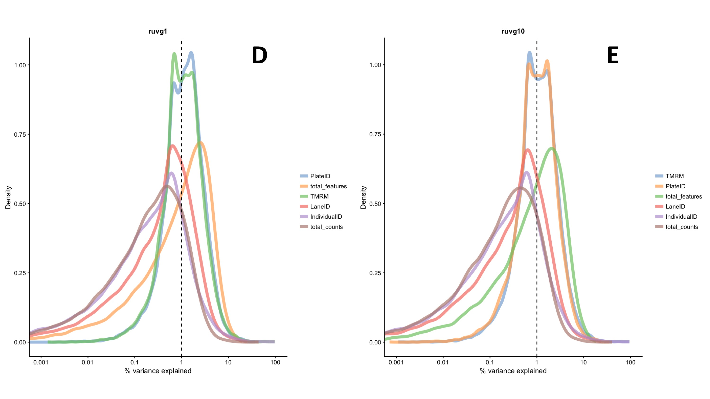
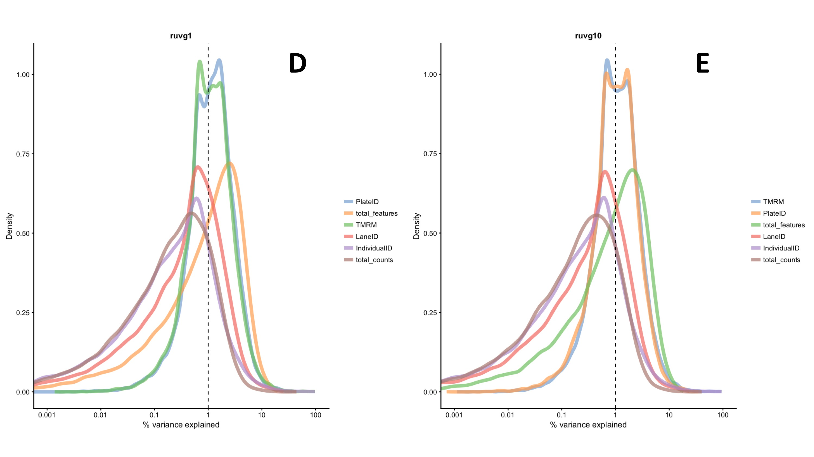

Single-cell RNA-seq analysis
Background
RNA-sequencing (RNA-seq) uses next-generation sequencing to quantify gene expression levels (Ramsköld et al., 2012). RNA-seq can be performed at the single cell level in single-cell RNA-seq (scRNA-seq; Tang et al., 2009). Unlike bulk RNA-seq, in which individual cell signals are averaged out, scRNA-seq enables differences in the transcriptomes of cells to be identified (Shapiro, Biezuner & Linnarsson, 2013). Therefore, scRNA-seq is particularly valuable when studying cell-specific transcriptome changes, for example the ageing response in mitochondria (Shapiro, Biezuner & Linnarsson, 2013).
scRNA-seq can be used to quantify levels of heteroplasmy and to compare the transcriptomes of cells with different levels of heteroplasmy. From this, an insight can be gained into how heteroplasmy affects the expression of mitochondrial and nuclear genes. Following scRNA-seq, various processing steps must be performed on the raw data in order to reach meaningful conclusions. Batch effects, which occur due to repeating experimental procedures, must be removed. Batch effects can arise due to the experiment being performed with different reagents, by a different researcher, or at a different time/day. It is essential that batch effects are removed as they can confound the biological signal of interest, preventing patterns or differences from being identified (Kiselev et al., 2018).
Methods
Data
The data was obtained from 384 Myoclonic epilepsy with ragged-red fibers (MERRF) fibroblast cells. These cells were categorised into the following biological conditions according to their MERRF genotype and TMRM measurements: wild type with low TMRM; wild type with high TMRM; mutant with low TMRM; mutant with high TMRM. The data was collected in four batches, each of which contained every biological condition. Figure 3 shows the experimental set-up. Two different scRNA-seq protocols were used. Plates 1 and 3 were analysed using SmartSeq2 (Picelli et al., 2014) and plates 2 and 4 were analysed using G&T-seq (Macaulay et al., 2015). The output data was in the form of an expression matrix with columns corresponding to cells and rows corresponding to genes.
{kind=link}
Quality control
The output expression matrix was analysed using various packages from the Bioconductor software in R (R Foundation for Statistical Computing, 2016; Huber et al., 2015). Firstly, genes were removed that were not expressed in any cells. Cells that contained too few reads were removed as the cells may have been broken or even absent from the well. A minimum threshold of 500,000 reads was selected based on analysis of the distribution of reads per cell. In order to have a good representation of the transcriptome, cells containing too few unique genes were removed. In this case, cells with less than 4000 unique genes were removed. Finally, genes were removed that were expressed in too few cells; at least two cells were required to contain more than one transcript of the gene.
Normalisation
The $scran$ package in Bioconductor was used to normalise the library size. Library size must be normalised as the number of reads derived from individual cells may differ substantially. $scran$ is a normalisation method designed specifically for scRNA-seq data. It pools cells together and calculates a normalisation factor for the sum of each pool.
Removal of batch effects
Various methods for removing batch effects were tested, a summary of which is shown below in table 1.
| Method name | Approach |
|---|---|
| RUVg | Uses negative control genes that are not differentially expressed, i.e. ERCC spike-ins (Risso et al., 2014). |
| RUVs | Uses technical replicates for which the covariates of interest are constant (Risso et al., 2014). |
| ComBat | An empirical Bayes method in which data is standardized so genes have similar overall mean and variance (Liu & Markatou, 2016). Requires balanced experimental design. |
| General linear model (GLM) | Generalization of a multiple linear regression model. |
RUVg and RUVs were performed twice with different values of $k$ ($k = 1, k = 10$), where $k$ represents the number of factors of unwanted variation. These variations of the RUVg and RUVs methods are herein referred to as RUVg1, RUVg10, RUVs1 and RUVs10. Following removal of batch effects by all of the methods in table 1, their effectiveness was analysed and compared using principle component analysis (PCA) and density plots showing the variance explained by each of the following variables: TMRM, lane ID, total features, total counts and plate ID. A brief explanation of each variable can be found in table 2.
| Variable name | Description |
|---|---|
| TMRM ($TMRM$) | A cell permeant dye that accumulates in mitochondria with intact membrane potentials, enabling it to be used as a proxy for mitochondrial function and heteroplasmy. Cells were placed into wells according to their TMRM category and genotype. |
| Lane ID ($LaneID$) | The scRNA-seq protocol that was performed. Either G&T-seq or SmartSeq2. |
| Total features ($total\_features$) | The total number of unique genes present in an individual cell. |
| Total counts ($total\_counts$) | The total number of reads present in a cell from all genes, i.e. if the gene was expressed in multiple copies. |
| Plate ID ($PlateID$) | See figure 3. Each plate contained all four TMRM conditions. Plate ID corresponds to the different batches. |
| Individual ID ($IndividualID$) | Whether the cell was wild type or mutant for the MERRF mutation. |
Results
Density plots
Figures 4A-4G are density plots showing the variance explained by each variable for every batch effect correction method (table 1). These plots are generated by calculating Pearson’s correlation coefficient squared (R2) for each variable (table 2) for each cell. Then, for each variable, all of the values of R2 are plotted as a density plot in which the peaks correspond to high concentration specific of that R2 value. Therefore, narrow, tall peaks represent high concordance in R2 values amongst the cells analysed. 

{kind=link}
{kind=link}
{kind=link}
Prior to batch correction, Plate ID explained approximately 1% of variation (fig. 4A). After batch correction by ComBat and GLM, variance explained by Plate ID had reduced to 0.1% and 0.001%, respectively (fig. 4B-4C), with over 0.75 density, suggesting high concordance of these values. ComBat and GLM also caused a reduction in the variance explained by Lane ID, with values reducing from approximately 0.75% for the raw count data to <0.1% and <0.001%, respectively. All four RUVseq methods (RUVg1, RUVg10, RUVs1 and RUVs10) showed an increase in variance explained by Plate ID to just over 1% with density values between ~0.90-1.00 (fig. 4D-4G).
Following batch effect removal, variance explained by individual ID and total counts remained at similar values to the input data which is expected as these variables were not targeted for correction by the methods. An increase in the variance explained by total features was observed for all methods, however these increases were coupled with fairly broad peaks and reasonably low density values. It is expected that variance explained by total counts and total features remained reasonably unchanged given that steps (see previous section titled Quality Control) were taken prior to batch effect correction to remove confounding signals in these variables. All peaks corresponding to TMRM remained largely unchanged following batch effect removal methods, indicating that the variation explained by TMRM corresponds to true biological variation.
PCA plots
Figures 5A-5G are PCA plots produced prior to (5A) and following batch effect correction by each method (5B-5G).
Figure 5A of the PCA plot prior to batch correction shows that the data points do not cluster according to their TMRM classification, as expected. The percentage variance for both dimensions reduced following all batch correction methods, showing that some variation was removed from the dataset. ComBat, GLM, RUVg1 and RUVg10 all show increased clustering based on high/low TMRM, i.e. CHigh/MHigh and CLow/MLow form clusters (fig. 5B-5E). RUVs1, however, shows clustering based on whether the cell is a mutant or wild type/control, i.e. CHigh/CLow and MHigh/MLow form clusters (fig. 5F). This pattern can also be slightly observed in figure 5G for RUVs10. Separation of biological samples, i.e. based on TMRM classification, indicates that technical confounders have been removed.
Method effectiveness
The effectiveness of each batch correction method can be compared by creating a relative log expression (RLE) plot. RLE plots show the level of unwanted variation in high dimensional data. Figure 6 is an RLE plot showing the unwanted variation before and after batch correction methods. It can be seen that ComBat and GLM have the least unwanted variation in comparison to the other methods.
{kind=link}
Discussion
From analysing the density (fig. 4), PCA (fig. 5) and RLE (fig. 6) plots, it appears that ComBat and GLM perform the best at reducing batch effects. This conclusion is reached due to the low levels of noise/unwanted variation for both methods (fig. 6), the clustering according TMRM categories (fig. 5B-5C), and the decrease in explained variance in density plots (fig. 4B-4C) for Plate ID, i.e. the different batches. It is logical that these two methods would perform similarly as GLM is a simplified version of ComBat.
TMRM consistently accounted for the most variance in the density plots and was the factor by which the data clustered in most PCA plots. As explained in table 2, TMRM is a dye that is sequestered by mitochondria with an active membrane potential. Therefore, TMRM can be used as a measure of mitochondrial function and thus heteroplasmy. The results from these analyses suggest that cells that can sequester different levels of TMRM have different gene expression profiles. Therefore, cells with lower mitochondrial membrane potentials have different gene expression profiles to their counterparts with higher, more intact mitochondrial membrane potentials. For most of the PCA plots, data points clustered according to either high or low TMRM values, i.e. the data points did not cluster further according to mutant or wild type genotype. This suggests that changes in the gene expression profile are cause by not only the MERRF genotype, but other factors such as heteroplasmy and the overall health of the mitochondria.
All methods of batch effect correction except the RUVseq methods led to a reduction in the variance explained by Plate ID, successfully removing batch effects. Although RUVg1 and RUVg10 led to a slight increase in variation explained by Plate ID (fig. 4D-4E), their corresponding PCA plots (fig. 5D-5E) showed clustering of points based on high or low TMRM values, similarly to ComBat and GLM, which suggests that they were able to partially remove batch effects. These conflicting results highlight the importance of carrying out multiple analyses to compare and validate the effectiveness of different methods.
The RUVs method can only account for variation within replicate groups (Risso et al., 2014). Therefore, variation occurring within a plate can be corrected, but not variation between plates. This explains why there is not a reduction in variance explained by Plate ID in the density plots (fig. 4F-4E) for both RUVs1 and RUVs10. Even though these methods have not fully removed batch effects, in their corresponding PCA plots (fig. 5F-5E) the data points are clustering according to genotype, suggesting that some unwanted variation was removed.